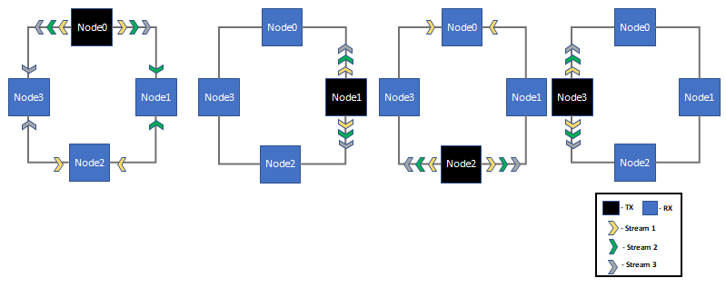
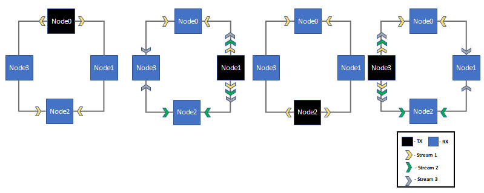
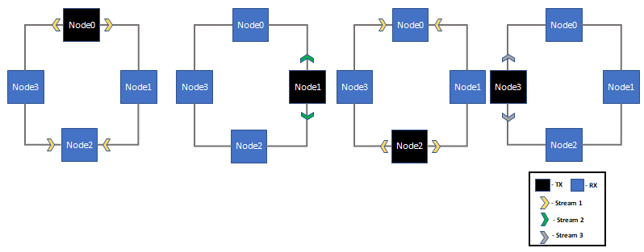
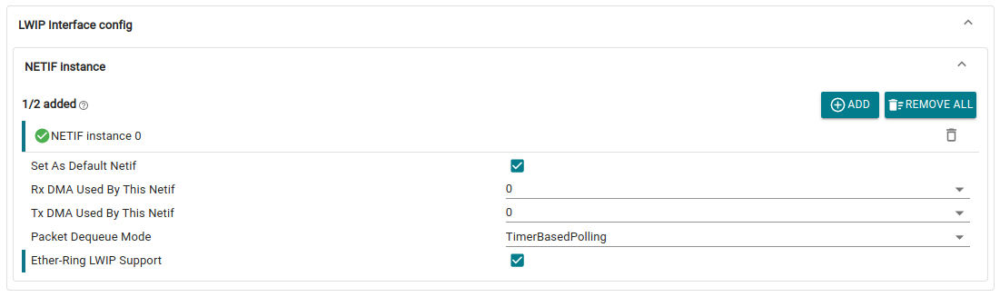

Introduction
This application illustrates the simultaneous configuration and usage of redundancy traffic (Real-time) and background LWIP traffic in the Ether-Ring topology. The Ether-ring TrafficGen application allows configuring traffic profiles such as Transmit Heavy, Receive Heavy, and Symmetric for redundancy traffic. Each node either acts as a TCP Server or TCP Client in the network, and LWIP traffic will be sent from the client to the server in the background.
The purpose of this application is to perform Latency benchmarking with different traffic profiles for redundancy traffic with LWIP running in the background. The idea is to calculate the Latency without depending on the PTP GET_CURRENT_TIMESTAMP. This is because the timestamp is not accurate due to the delay added by IOCTL calls and the PTP timestamp in the FIFO model.
This application enables both MAC ports by default and each node is connected to its neighbouring node in a loop. This application uses Ether-ring (‘802.1CB-like’) to support Packet Duplication, Ring Termination in Hardware and Duplicate Rejection in Software.
The example application opens two DMA TX channels and two DMA RX channels. The TX0 and RX0 DMA channels are dedicated to handling redundancy packets via the Ether-Ring Driver, ensuring reliable data transmission even in case of failures. The TX1 and RX1 DMA channels are reserved for LWIP Background traffic.
Ether-Ring overview
Please refer here for Ether-Ring overview
Traffic Profiles for Redundancy Traffic
The redundancy traffic is divided into 3 types to perform Latency benchmarking based on use case. The application can configure all the Zones in one of the following types by modifying the gTrafficProfile variable in the code:
- Transmit Heavy: The redundancy traffic transmitted from the CPU is more compared to the traffic received by the CPU. This traffic type simulates the majority of Zonal controllers in Automotive, where multiple Ethernet streams are periodically sent to the "CENTRAL COMPUTE."
- Receive Heavy: The redundancy traffic received to the CPU is more compared to the traffic transmitted from CPU. This simulates the Zonal Controller where the streams received are more compared to the streams sent.
- Symmetric Traffic: This traffic type configures the zones to send and receive same data rate of Real-time ethernet traffic periodically.
Transmit-Heavy(Profile-A)

Transmit Heavy Traffic profile with each nodes acting as transmitter and subsequent receiver of each stream
By default, the application configures the Traffic profile as "Transmit Heavy." The user can modify the configuration by changing the value of gTrafficProfile in the code (e.g., gTrafficProfile = TRAFFIC_PROFILE_B; for Receive Heavy) based on the use case.
Receive-Heavy(Profile-B)

Receive-Heavy Traffic with each nodes acting as transmitter and subsequent receiver of each stream
Symmetric Traffic(Profile-C)

Symmetric Traffic with each nodes acting as transmitter and subsequent receiver of each stream
LWIP background traffic
Redundancy packets use Multicast Destination address to reach the destination Node. Even when ALE source learning is enabled, the packets are not dropping on mac port due to proper port mask configuration per Multicast address. When redundant multicast packets are sent in the ring, the source learning of Unicast address will be updated on all the Nodes.
Due to this source learning, the LWIP ARP unicast packet will be dropped at the MAC port because the ALE (Address Lookup Engine) updates its forwarding table with the source MAC address of the redundant multicast packets, causing it to misroute subsequent unicast packets. As a result, running LWIP traffic in the background is not possible with the default ALE configuration.
When a wire is broken, only the neighboring nodes will detect the Link DOWN event. This application configures each zone to handle LWIP traffic in ring topology and user has to make the following configuration to handle wire-cut scenario for LWIP traffic:
- Detect Link DOWN: In the port status change callback (
EnetApp_portLinkStatusChangeCb()), detect the Link DOWN event and trigger the broadcast mechanism.
- Send Initial Broadcast Packet: Send a broadcast packet from the neighboring nodes to inform all other nodes in the ring about the Link DOWN event. This packet should include:
- A special identifier in the payload to distinguish it from regular traffic.
- The source MAC address used for LWIP traffic should be used to send broadcast packet also.
- Process Broadcast Packet: When a node receives this broadcast packet, it should:
- Enable source learning for the MAC address included in the packet.
- Update its ALE (Address Lookup Engine) table with the source MAC address.
- Disable the "Ether-Ring LWIP Support" in SysConfig GUI tool to allow non-directed LWIP traffic.
- Send Secondary Broadcast Packet: After enabling source learning, the node should send another broadcast packet with the same source MAC address. This ensures that the ALE table is updated across all nodes in the ring.
- Use LWIP MAC Address: Ensure that the MAC address used for these broadcast packets matches the one configured for LWIP traffic to maintain consistency.
By following these steps, the ALE will correctly learn the source MAC address, and the network will recover from the wire-cut scenario without dropping packets.
Configuration to use LWIP traffic in Ring Topology
- Different sets of Host Mac address for LWIP Background traffic and Real-time traffic
- Send the LWIP Traffic as directed packets either from Mac port 1 or Mac port 2 from all the Nodes
SysConfig GUI tool configuration
Enable "Ether-Ring LWIP Support" per netif in SysConfig GUI tool to send LWIP Directed packets in Ring.

Ether-ring LWIP Support in SysConfig GUI tool
Latency Benchmarking
Irrespective of traffic type, the profiling is enabled by default for Real-time traffic sent from Node 0. The application adds the current timestamp (CPU Time) at the start of payload in the packet. Additionally, parameters like sequence number and source node ID are appended after the timestamp.
When a packet is received on the farthest node (Node 2) from Node 0, the Ethernet packet is echoed back without modifying the payload. Upon receiving the packet back at the source node (Node 0), the timestamp embedded in the payload is extracted and compared with the current time to calculate the round trip latency (RTL) for each packet. After sending "ENETAPP_PACKETS_SENT_PER_STREAM" packets, the application calculates the average, maximum latency and prints on the console.
As the Round Trip method is used to benchmark latency, the CPU time from source node is used to measure the packet transmit and receive time. Due to this, PTP synchronization is not needed for benchmarking latency.
Measured Average and Maximum Latency
Please refer here for Ether-Ring performance
Configuration Parameters
Typically, the application's parameters in "etherring_trafficgen_config.h" that a developer may want to change are:
- ENETAPP_MAX_NODES_IN_RING - Application configures the max nodes as 4 and but the user can choose to update the number of nodes in etherring.
- ENETAPP_NUM_CLASSA_STREAMS - The number of Class A Streams are configured as 3 for Transmit Heavy and Receive Heavy Traffic profiles.
- ENETAPP_MAX_CLASSA_STREAMS - By default maximum Class A Streams are configured as 3. User has to update it based on the "ENETAPP_NUM_CLASSA_STREAMS" configuration.
- ENETAPP_ENABLE_TCP_BG_TRAFFIC - Flag to enable or disable the Lwip background traffic.
- ENETAPP_CLASSA_PAYLOAD_LENGTH - Class A payload length is configured as 500 by default and user can update it to achieve the desired data rate.
Supported Combinations
| Parameter | Value |
| CPU + OS | r5fss0-0_freertos |
| Toolchain | ti-arm-clang |
| Boards | am263x-lp |
| Example folder | source/networking/enet/core/examples/etherring_trafficgen |
Ether-Ring TrafficGen Applciation Start Menu
The following helper options are also provided in the application's start menu to configure the each node uniquely in Etherring:
===============================
EtherRing TrafficGen App
===============================
0 - Central Compute Node
1 - Zone Left Node
2 - Zone Right Node
3 - Zone Tail Node
Enter the nodeId :
Steps to Run the Example
Build the example
- When using CCS projects to build, import the CCS project for the required combination and build it using the CCS project menu (see Using SDK with CCS Projects).
- When using makefiles to build, note the required combination and build using make command (see Using SDK with Makefiles)
HW Setup
Make sure you have setup the EVM with cable connections as shown in below Diagram. In addition, follow the steps in the next section.

Ether-Ring EVM Connections
Run the example
Basic Test
The simplest test that one can run with the ETHERRING example consists of:
- Configuring the each node uniquely in the Ether-ring Network using NodeId and real-time traffic profile to all the streams
- After the configuration, the application sends and receives the real-time traffic and LWIP background traffic
- Application measures the round trip latency If the profiling is enabled for that particular stream. It prints the Average and Maximum latency on the console for Node0.
The steps to run this test are:
- Connect the MAC port as described in HW Setup section and configure the Nodes using UART Terminal.
- Launch a CCS debug session and run the example executable, see CCS Launch, Load and Run.
- Application logs such as Traffic profile type and LWIP configuration. Sample logs are shown in the next section.
- Configure the each node as mentioned in Ether-Ring TrafficGen Applciation Start Menu section using UART Terminal around the same time in all the Nodes to start the application and wait for
----------ETHERRING DEMONSTRATION COMPLETED---------- to be printed on UART Terminal.
Sample output
===============================
EtherRing TrafficGen App
===============================
0 - Central Compute Node
1 - Zone Left Node
2 - Zone Right Node
3 - Zone Tail Node
Enter the nodeId :
0
Create RX task for redundancy Traffic
start to open driver.
Init all configs
----------------------------------------------
Open MAC port 1
EnetPhy_bindDriver:1873
Open MAC port 2
EnetPhy_bindDriver:1873
PHY 3 is alive
PHY 12 is alive
initQs() txFreePktInfoQ initialized with 48 pkts
MAC port addr: 70:ff:76:1e:60:e0
Rx Traffic Handler started
Starting lwIP, local interface IP is dhcp-enabled
[LWIPIF_LWIP] NETIF INIT SUCCESS
Host MAC address-0 : 34:08:e1:84:dd:31
Enet IF UP Event. Local interface IP:192.168.1.100
[LWIPIF_LWIP] Enet has been started successfully
Waiting for network UP ...
Waiting for network UP ...
Cpsw_handleLinkUp:1653
MAC Port 1: link up
Network Link UP Event
Cpsw_handleLinkUp:1653
MAC Port 2: link up
Network is UP ...
Acts as TCP Server
Redundancy Traffic Task Creation
Listening on 192.168.1.100:8888
accepted new connection 70079280
********Ether-Ring Demonstration Completed********
Average Latency: 44 us
Maximum Latency: 94 us
Troubleshooting issues
See Also
Ethernet And Networking
 1.8.20
1.8.20